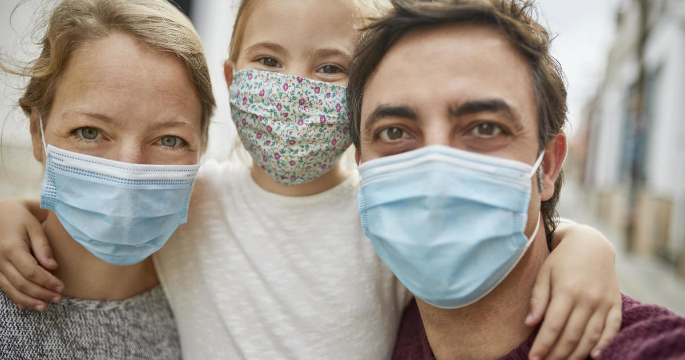

Thanks for wearing your mask!
Description
Thanks for testing out the mask model gatekeeper app! My hope is to eventually integrate this into a react-native module!
Some notes about data sourcing:
- The real masked dataset was created by a Chinese institution and included mostly Asian people. As a result, Asian faces may be a bias factor. Artificially generated masked data did not include this bias
- Head positioning was a concern, as direct facing was more common than profile or other views. This was addressed by adding a dataset of various head angles. However, various head angles with masks was not achievable.
- Mask patterns also present a problem. In many of the mask images only a single type of mask is used (medical). This can confuse the model when predicting on patterned masks.
- Improper Mask Data sourcing proved to be very challenging. Originally it appeared the Mask-Face-Net data source would have a good source for artificially created improper mask wearing, but ultimately the distortions were not helpful and often rightfully confused with proper mask wearing.
Status
Model Output
Image being used for prediction
